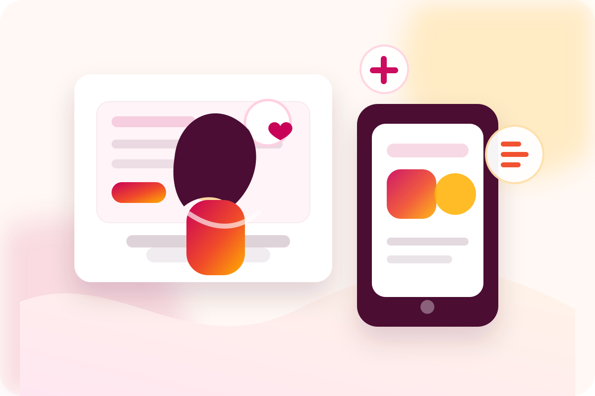

Comunicación digitalCommunity manager
Gestión profesional de redes sociales, planificación de contenidos, diseño de publicaciones y mejora de la presencia digital de socias y proyectos.
- Calendario editorial mensual.
- Publicaciones para Instagram, Facebook o LinkedIn.
- Comunicación coherente con la marca.